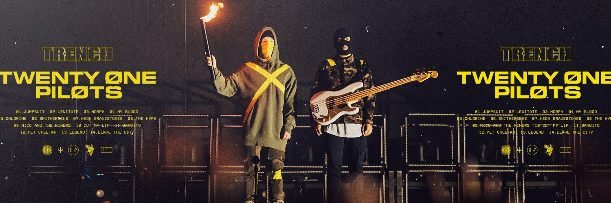

Twenty øne Piløts
Historia
Twenty One Pilots (estilizado como twenty one pilots ou twenty øne piløts) é um duo americano originário de Columbus, Ohio. A banda foi formada em 2009 e é composta por Tyler Joseph e Josh Dun. Eles lançaram dois álbuns independentes, Twenty One Pilots, em 2009, e Regional at Best, em 2011, antes de assinarem com a gravadora Fueled by Ramen, em 2012. Seu primeiro álbum com esta gravadora, Vessel, foi lançado em 2013. O duo alcançou um grande sucesso com seu quarto álbum, Blurryface, lançado em 2015. O quinto álbum de estúdio do duo, Trench, foi lançado em 5 de outubro de 2018.
(informações retiradas de https://www.wikipedia.org/)